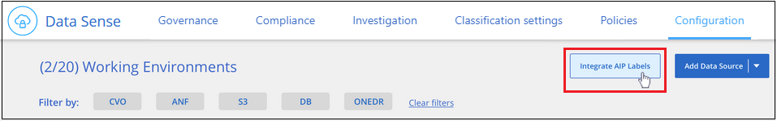
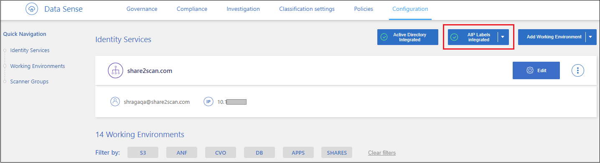
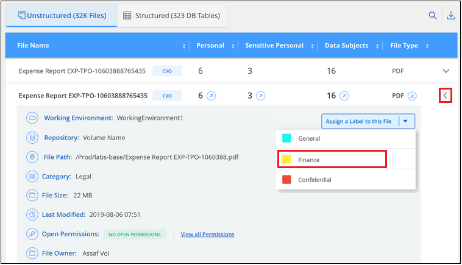
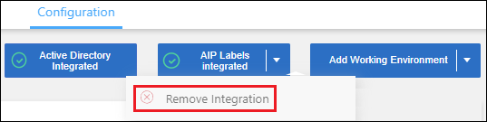

Solicitar cambios en el documento
Solicitar cambios en el documento Editar en GitHub
Editar en GitHub Guía del colaborador
Guía del colaboradorOrganizar sus datos privados
Colaboradores
Cloud Data Sense ofrece muchas formas de gestionar y organizar sus datos privados. Esto le facilita ver los datos que más le importan.
-
Si está suscrito a. "Protección de información de Azure (AIP)" Para clasificar y proteger sus archivos, puede utilizar Cloud Data Sense para administrar esas etiquetas AIP.
-
Puede agregar etiquetas a los archivos que desee marcar para la organización o para algún tipo de seguimiento.
-
Puede asignar un usuario de BlueXP a un archivo específico, o a varios archivos, para que la persona pueda ser responsable de administrar el archivo.
-
Con la funcionalidad "Directiva" puede crear sus propias consultas de búsqueda personalizadas para que pueda ver fácilmente los resultados haciendo clic en un botón.
-
Puede enviar alertas por correo electrónico a los usuarios de BlueXP o a cualquier otra dirección de correo electrónico, cuando ciertas políticas críticas devuelvan resultados.

|
Las capacidades descritas en esta sección sólo están disponibles si ha elegido realizar un análisis de clasificación completo en sus orígenes de datos. Los orígenes de datos que han tenido un análisis de sólo asignación no muestran detalles de nivel de archivo. |
¿Debo usar etiquetas o etiquetas?
A continuación se ofrece una comparación del etiquetado de Data Sense y del etiquetado de la protección de la información de Azure.
| Etiquetas | Etiquetas |
|---|---|
Las etiquetas de archivo son una parte integrada de Data Sense. |
Requiere que se haya suscrito a la protección de información de Azure (AIP). |
La etiqueta sólo se guarda en la base de datos de detección de datos; no se escribe en el archivo. No cambia el archivo, ni los tiempos de acceso o modificación del archivo. |
La etiqueta forma parte del archivo y cuando la etiqueta cambia, el archivo cambia. Este cambio también cambia los tiempos de acceso y modificación del archivo. |
Puede tener varias etiquetas en un único archivo. |
Puede tener una etiqueta en un solo archivo. |
La etiqueta se puede utilizar para la acción de detección de datos interna, como copiar, mover, eliminar, ejecutar una política, etc. |
Otros sistemas que pueden leer el archivo pueden ver la etiqueta, que se puede utilizar para automatización adicional. |
Sólo se utiliza una sola llamada API para ver si un archivo tiene una etiqueta. |
Categorizar sus datos mediante etiquetas AIP
Puede administrar etiquetas AIP en los archivos que detección de datos en la nube está analizando si se ha suscrito "Protección de información de Azure (AIP)". AIP le permite clasificar y proteger documentos y archivos aplicando etiquetas al contenido. Data Sense permite ver las etiquetas que ya están asignadas a los archivos, agregar etiquetas a los archivos y cambiar etiquetas cuando ya existe una etiqueta.
Cloud Data Sense admite etiquetas AIP dentro de los siguientes tipos de archivo: .DOC, .DOCX, .PDF, .PPTX, .XLS, .XLSX.
|
|
|
Integración de etiquetas AIP en el espacio de trabajo
Antes de poder administrar etiquetas AIP, debe integrar la funcionalidad de etiquetas AIP en Cloud Data Sense iniciando sesión en su cuenta de Azure existente. Una vez activado, puede administrar etiquetas AIP dentro de los archivos para todos "fuentes de datos" En el espacio de trabajo de BlueXP.
-
Debe tener una cuenta y una licencia de Azure Information Protection.
-
Debe tener las credenciales de inicio de sesión de la cuenta de Azure.
-
Si planea cambiar las etiquetas de los archivos que residen en bloques de Amazon S3, asegúrese de que el permiso
s3:PutObjectSe incluye en el rol IAM. Consulte "Configuración del rol IAM".
-
En la página Configuración de detección de datos en la nube, haga clic en integrar etiquetas AIP.

-
En el cuadro de diálogo integrar etiquetas AIP, haga clic en Iniciar sesión en Azure.
-
En la página de Microsoft que aparece, seleccione la cuenta e introduzca las credenciales necesarias.
-
Vuelva a la ficha sentido de datos en la nube y verá el mensaje "AIP Labels se han integrado correctamente con la cuenta <account_name>".
-
Haga clic en Cerrar y verá el texto AIP Labels integrated en la parte superior de la página.

Puede ver y asignar etiquetas AIP desde el panel de resultados de la página Investigación. También puede asignar etiquetas AIP a archivos mediante directivas.
Ver etiquetas AIP en los archivos
Puede ver la etiqueta AIP actual que está asignada a un archivo.
En el panel resultados de la investigación de datos, haga clic en  para que el archivo expanda los detalles de metadatos del archivo.
para que el archivo expanda los detalles de metadatos del archivo.

Asignación manual de etiquetas AIP
Puede agregar, cambiar y eliminar etiquetas AIP de sus archivos con Cloud Data Sense.
Siga estos pasos para asignar una etiqueta AIP a un único archivo.
-
En el panel resultados de la investigación de datos, haga clic en
 para que el archivo expanda los detalles de metadatos del archivo.
para que el archivo expanda los detalles de metadatos del archivo.
-
Haga clic en asignar una etiqueta a este archivo y, a continuación, seleccione la etiqueta.
La etiqueta aparece en los metadatos del archivo.
Para asignar una etiqueta AIP a varios archivos:
-
En el panel resultados de la investigación de datos, seleccione el archivo o los archivos que desea etiquetar.

-
Para seleccionar archivos individuales, marque la casilla de cada archivo (
 ).
). -
Para seleccionar todos los archivos de la página actual, active la casilla de la fila de título (
 ).
).
-
-
En la barra de botones, haga clic en etiqueta y seleccione la etiqueta AIP:

La etiqueta AIP se agrega a los metadatos de todos los archivos seleccionados.
Eliminación de la integración AIP
Si ya no desea gestionar etiquetas AIP en archivos, puede eliminar la cuenta AIP de la interfaz de Cloud Data Sense.
Tenga en cuenta que no se realiza ningún cambio en las etiquetas que ha agregado con Data Sense. Las etiquetas que existen en los archivos permanecerán tal como existen actualmente.
-
En la página Configuration, haga clic en Etiquetas AIP integradas > Eliminar integración.

-
Haga clic en Eliminar integración en el cuadro de diálogo de confirmación.
Aplicación de etiquetas para administrar los archivos capturados
Puede agregar una etiqueta a los archivos que desee marcar para algún tipo de seguimiento. Por ejemplo, es posible que haya encontrado algunos archivos duplicados y desee eliminar uno de ellos, pero debe comprobar qué se debe eliminar. Puede agregar una etiqueta de "comprobar para eliminar" al archivo para que sepa que este archivo requiere algún tipo de investigación y acción futura.
Data Sense permite ver las etiquetas asignadas a los archivos, agregar o quitar etiquetas de los archivos y cambiar el nombre o eliminar una etiqueta existente.
Tenga en cuenta que la etiqueta no se agrega al archivo de la misma manera que las etiquetas AIP forman parte de los metadatos del archivo. Los usuarios de BlueXP acaban de ver la etiqueta con Cloud Data Sense, por lo que puede ver si es necesario eliminar o comprobar un archivo para algún tipo de seguimiento.

|
Las etiquetas asignadas a los archivos en Cloud Data Sense no están relacionadas con las etiquetas que puede agregar a los recursos, como volúmenes o instancias de máquinas virtuales. Las etiquetas de detección de datos se aplican en el nivel de archivo. |
Ver archivos que tienen ciertas etiquetas aplicadas
Puede ver todos los archivos que tienen asignadas etiquetas específicas.
-
Haga clic en la ficha Investigación de Cloud Data Sense.
-
En la página Investigación de datos, haga clic en Etiquetas en el panel Filtros y, a continuación, seleccione las etiquetas necesarias.

El panel resultados de la investigación muestra todos los archivos que tienen asignadas esas etiquetas.
Asignar etiquetas a archivos
Puede agregar etiquetas a un único archivo o a un grupo de archivos.
Para agregar una etiqueta a un único archivo:
-
En el panel resultados de la investigación de datos, haga clic en
para que el archivo expanda los detalles de metadatos del archivo. -
Haga clic en el campo Etiquetas y se mostrarán las etiquetas asignadas actualmente.
-
Agregue la etiqueta o las etiquetas:
-
Para asignar una etiqueta existente, haga clic en el campo Nueva etiqueta… y empiece a escribir el nombre de la etiqueta. Cuando aparezca la etiqueta que está buscando, selecciónela y pulse Intro.
-
Para crear una nueva etiqueta y asignarla al archivo, haga clic en el campo Nueva etiqueta…, escriba el nombre de la nueva etiqueta y pulse Intro.

La etiqueta aparece en los metadatos del archivo.
-
Para agregar una etiqueta a varios archivos:
-
En el panel resultados de la investigación de datos, seleccione el archivo o los archivos que desee etiquetar.
-
Para seleccionar archivos individuales, marque la casilla de cada archivo (
). -
Para seleccionar todos los archivos de la página actual, active la casilla de la fila de título (
).
-
-
En la barra de botones, haga clic en Etiquetas y aparecerán las etiquetas asignadas actualmente.
-
Agregue la etiqueta o las etiquetas:
-
Para asignar una etiqueta existente, haga clic en el campo Nueva etiqueta… y empiece a escribir el nombre de la etiqueta. Cuando aparezca la etiqueta que está buscando, selecciónela y pulse Intro.
-
Para crear una nueva etiqueta y asignarla al archivo, haga clic en el campo Nueva etiqueta…, escriba el nombre de la nueva etiqueta y pulse Intro.

-
-
Apruebe la adición de etiquetas en el cuadro de diálogo de confirmación y las etiquetas se agregarán a los metadatos de todos los archivos seleccionados.
Eliminar etiquetas de los archivos
Puede eliminar una etiqueta si ya no necesita utilizarla.
Sólo tiene que hacer clic en x para ver una etiqueta existente.

Si ha seleccionado varios archivos, la etiqueta se elimina de todos los archivos.
Asignar usuarios para administrar determinados archivos
Puede asignar un usuario de BlueXP a un archivo específico, o a varios archivos, para que pueda ser responsable de cualquier acción de seguimiento que necesite realizar en el archivo. Esta funcionalidad se suele utilizar con la función para agregar etiquetas de estado personalizadas a un archivo.
Por ejemplo, puede tener un archivo que contiene ciertos datos personales que permiten a demasiados usuarios acceso de lectura y escritura (permisos abiertos). Así que podría asignar la etiqueta de estado "Cambiar permisos" y asignar este archivo al usuario "Joan Smith" para que puedan decidir cómo solucionar el problema. Cuando hayan solucionado el problema, podrían cambiar la etiqueta de estado a "completado".
Tenga en cuenta que el nombre de usuario no se agrega al archivo como parte de los metadatos de los archivos; los usuarios de BlueXP acaban de ver al utilizar Cloud Data Sense.
Un filtro nuevo en la página Investigación le permite ver fácilmente todos los archivos que tienen la misma persona en el campo "asignado a".
Para asignar un usuario a un único archivo:
-
En el panel resultados de la investigación de datos, haga clic en
para que el archivo expanda los detalles de metadatos del archivo. -
Haga clic en el campo asignado a y seleccione el nombre de usuario.

El nombre de usuario aparece en los metadatos del archivo.
Para asignar un usuario a varios archivos:
-
En el panel resultados de la investigación de datos, seleccione el archivo o los archivos que desea asignar a un usuario.
-
Para seleccionar archivos individuales, marque la casilla de cada archivo (
). -
Para seleccionar todos los archivos de la página actual, active la casilla de la fila de título (
).
-
-
En la barra de botones, haga clic en asignar a y seleccione el nombre de usuario:

El usuario se agrega a los metadatos de todos los archivos seleccionados.